This tutorial will focus on the use of Bayesian estimation to fit simple linear regression models …
Keywords
Software, Statistics, Stan
This tutorial will focus on the use of Bayesian estimation to fit simple linear regression models. BUGS (Bayesian inference Using Gibbs Sampling) is an algorithm and supporting language (resembling R) dedicated to performing the Gibbs sampling implementation of Markov Chain Monte Carlo (MCMC) method. Dialects of the BUGS language are implemented within three main projects:
OpenBUGS - written in component pascal.
JAGS - (Just Another Gibbs Sampler) - written in C++.
STAN - a dedicated Bayesian modelling framework written in C++ and implementing Hamiltonian MCMC samplers.
Whilst the above programs can be used stand-alone, they do offer the rich data pre-processing and graphical capabilities of R, and thus, they are best accessed from within R itself. As such there are multiple packages devoted to interfacing with the various software implementations:
R2OpenBUGS - interfaces with OpenBUGS
R2jags - interfaces with JAGS
rstan - interfaces with STAN
This tutorial will demonstrate how to fit models in JAGS (Plummer (2004)) using the package R2jags (Su et al. (2015)) as interface, which also requires to load some other packages.
Overview
Introduction
Previous tutorials have concentrated on designs for either continuous (Regression) or categorical (ANOVA) predictor variables. Analysis of covariance (ANCOVA) models are essentially ANOVA models that incorporate one or more continuous and categorical variables (covariates). Although the relationship between a response variable and a covariate may itself be of substantial clinical interest, typically covariate(s) are incorporated to reduce the amount of unexplained variability in the model and thereby increase the power of any treatment effects.
In ANCOVA, a reduction in unexplained variability is achieved by adjusting the response (to each treatment) according to slight differences in the covariate means as well as accounting for any underlying trends between the response and covariate(s). To do so, the extent to which the within treatment group small differences in covariate means between groups and treatment groups are essentially compared via differences in their \(y\)-intercepts. The total variation is thereafter partitioned into explained (using the deviations between the overall trend and trends approximated for each of the treatment groups) and unexplained components (using the deviations between the observations and the approximated within group trends). In this way, ANCOVA can be visualized as a regular ANOVA in which the group and overall means are replaced by group and overall trendlines. Importantly, it should be apparent that ANCOVA is only appropriate when each of the within group trends have the same slope and are thus parallel to one another and the overall trend. Furthermore, ANCOVA is not appropriate when the resulting adjustments must be extrapolated from a linear relationship outside the measured range of the covariate.
As an example, an experiment might be set up to investigate the energetic impacts of sexual vs parthenogenetic (egg development without fertilization) reproduction on leaf insect food consumption. To do so, researchers could measure the daily food intake of individual adult female leaf insects from female only (parthenogenetic) and mixed (sexual) populations. Unfortunately, the available individual leaf insects varied substantially in body size which was expected to increase the variability of daily food intake of treatment groups. Consequently, the researchers also measured the body mass of the individuals as a covariate, thereby providing a means by which daily food consumption could be standardized for body mass. ANCOVA attempts to reduce unexplained variability by standardising the response to the treatment by the effects of the specific covariate condition. Thus ANCOVA provides a means of exercising some statistical control over the variability when it is either not possible or not desirable to exercise experimental control (such as blocking or using otherwise homogeneous observations).
The adjusted population group means are all equal. The mean of population \(1\) adjusted for the covariate is equal to that of population \(2\) adjusted for the covariate and so on, and thus all population means adjusted for the covariate are equal to an overall adjusted mean. If the effect of the \(i\)-th group is the difference between the \(i\)-th group adjusted mean and the overall adjusted mean (\(\alpha_i(adj)=\mu_i(adj)−\mu(adj)\)) then the \(H_0\) can alternatively be written as:
The effect of each group equals zero. If one or more of the \(\alpha_i(adj)\) are different from zero (the response mean for this treatment differs from the overall response mean), the null hypothesis is not true, indicating that the treatment does affect the response variable.
Factor B: the covariate effect
\(H_0(B):\beta_1(pooled)=0\)
The pooled population slope equals zero. Note, that this null hypothesis is rarely of much interest. It is precisely because of this nuisance relationship that ANCOVA designs are applied.
Linear models
One or more covariates can be incorporated into single factor, nested, factorial and partly nested designs in order to reduce the unexplained variation. Fundamentally, the covariate(s) are purely used to adjust the response values prior to the regular analysis. The difficulty is in determining the appropriate adjustments. Following is a list of the appropriate linear models and adjusted response calculations for a range of ANCOVA designs. Note that these linear models do not include interactions involving the covariates as these are assumed to be zero. The inclusion of these interaction terms is a useful means of testing the homogeneity of slopes assumption.
Single categorical and single covariate
Linear model: \(y_{ij}=\mu + \alpha_i + \beta(x_{ij}-\bar{x}) + \epsilon_{ij}\)
In ANCOVA, the total variability of the response variable is sequentially partitioned into components explained by each of the model terms, starting with the covariate and is therefore equivalent to performing a regular analysis of variance on the response variables that have been adjusted for the covariate. The appropriate unexplained residuals and therefore the appropriate F-ratios for each factor differ according to the different null hypotheses associated with different linear models as well as combinations of fixed and random factors in the model (see the following tables). Note that since the covariate levels measured are typically different for each group, ANCOVA designs are inherently non-orthogonal (unbalanced). Consequently, sequential (Type I sums of squares) should not be used. For very simple Ancova designs that incorporate a single categorical and single covariate, Type I sums of squares can be used provided the covariate appears in the linear model first (and thus is partitioned out last) as we are typically not interested in estimating this effect.
ancova_table
NA df MS F-ratio (A&B fixed) F-ratio (B fixed)
NA Factor A "a-1" "MS A" "(MS A)/(MS res)" "(MS A)/(MS res)"
NA Factor B "1" "MS B" "(MS B)/(MS res)" "(MS B)/(MS res)"
NA Factor AB "a-1" "MS AB" "(MS AB)/(MS res)" "(MS AB)/(MS res)"
NA Residual "(n-2)a" "MS res" "" ""
The corresponding R syntax is given below.
anova(lm(DV ~ B * A, dataset))# ORanova(aov(DV ~ B * A, dataset))# OR (make sure not using treatment contrasts)Anova(lm(DV ~ B * A, dataset), type ="III")
Assumptions
As ANCOVA designs are essentially regular ANOVA designs that are first adjusted (centered) for the covariate(s), ANCOVA designs inherit all of the underlying assumptions of the appropriate ANOVA design. Specifically, hypothesis tests assume that:
The appropriate residuals are normally distributed. Boxplots using the appropriate scale of replication (reflecting the appropriate residuals/F-ratio denominator, see the above tables) should be used to explore normality. Scale transformations are often useful.
The appropriate residuals are equally varied. Boxplots and plots of means against variance (using the appropriate scale of replication) should be used to explore the spread of values. Residual plots should reveal no patterns. Scale transformations are often useful.
The appropriate residuals are independent of one another.
The relationship between the response variable and the covariate should be linear. Linearity can be explored using scatterplots and residual plots should reveal no patterns.
For repeated measures and other designs in which treatment levels within blocks can not be be randomly ordered, the variance/covariance matrix is assumed to display sphericity.
For designs that utilise blocking, it is assumed that there are no block by within block interactions.
Homogeneity of Slopes
In addition to the above assumptions, ANCOVA designs also assume that slopes of relationships between the response variable and the covariate(s) are the same for each treatment level (group). That is, all the trends are parallel. If the individual slopes deviate substantially from each other (and thus the overall slope), then adjustments made to each of the observations are nonsensical. This situation is analogous to an interaction between two or more factors. In ANCOVA, interactions involving the covariate suggest that the nature of the relationship between the response and the covariate differs between the levels of the categorical treatment. More importantly, they also indicate that whether or not there is an effect of the treatment depends on what range of the covariate you are focussed on. Clearly then, it is not possible to make conclusions about the main effects of treatments in the presence of such interactions. The assumption of homogeneity of slopes can be examined via interaction plots or more formally, by testing hypotheses about the interactions between categorical variables and the covariate(s). There are three broad approaches for dealing with ANCOVA designs with heterogeneous slopes and selection depends on the primary focus of the study.
When the primary objective of the analysis is to investigate the effects of categorical treatments, it is possible to adopt an approach similar to that taken when exploring interactions in multiple regression. The effect of treatments can be examined at specific values of the covariate (such as the mean and \(\pm\) one standard deviation). This approach is really only useful at revealing broad shifts in patterns over the range of the covariate and if the selected values of the covariate do not have some inherent clinical meaning (selected arbitrarily), then the outcomes can be of only limited clinical interest.
Alternatively, the Johnson-Neyman technique (or Wilxon modification thereof) procedure indicates the ranges of the covariate over which the individual regression lines of pairs of treatment groups overlap or cross. Although less powerful than the previous approach, the Wilcox(J-N) procedure has the advantage of revealing the important range (ranges for which the groups are different and not different) of the covariate rather than being constrained by specific levels selected.
Use contrast treatments to split up the interaction term into its constituent contrasts for each level of the treatment. Essentially this compares each of the treatment level slopes to the slope from the “control” group and is useful if the primary focus is on the relationships between the response and the covariate.
Similar covariate ranges
Adjustments made to the response means in an attempt to statistically account for differences in the covariate involve predicting mean response values along displaced linear relationships between the overall response and covariate variables. The degree of trend displacement for any given group is essentially calculated by multiplying the overall regression slope by the degree of difference between the overall covariate mean and the mean of the covariate for that group. However, when the ranges of the covariate within each of the groups differ substantially from one another, these adjustments are effectively extrapolations and therefore of unknown reliability. If a simple ANOVA of the covariate modelled against the categorical factor indicates that the covariate means differ significantly between groups, it may be necessary to either remove extreme observations or reconsider the analysis.
Robust ANCOVA
ANCOVA based on rank transformed data can be useful for accommodating data with numerous problematic outliers. Nevertheless, problems about the difficulties of detecting interactions from rank transformed data, obviously have implications for inferential tests of homogeneity of slopes. Randomisation tests that maintain response0covariate pairs and repeatedly randomise these observations amongst the levels of the treatments can also be useful, particularly when there is doubt over the independence of observations. Both planned and unplanned comparisons follow those of other ANOVA chapters without any real additional complications. Notably, recent implementations of the Tukey’s test (within R) accommodate unbalanced designs and thus negate the need for some of the more complicated and specialised techniques that have been highlighted in past texts.
Data generation
Consider an experimental design aimed at exploring the effects of a categorical variable with three levels (Group A, Group B and Group C) on a response. From previous studies, we know that the response is influenced by another variable (covariate). Unfortunately, it was not possible to ensure that all sampling units were the same degree of the covariate. Therefore, in an attempt to account for this anticipated extra source of variability, we measured the level of the covariate for each sampling unit. Actually, in allocating treatments to the various treatment groups, we tried to ensure a similar mean and range of the covariate within each group.
set.seed(123)n <-10p <-3A.eff <-c(40, -15, -20)beta <--0.45sigma <-4B <-rnorm(n * p, 0, 15)A <-gl(p, n, lab =paste("Group", LETTERS[1:3]))mm <-model.matrix(~A + B)data <-data.frame(A = A, B = B, Y =as.numeric(c(A.eff, beta) %*%t(mm)) +rnorm(n * p, 0, 4))data$B <- data$B +20head(data)
NA A B Y
NA 1 Group A 11.59287 45.48907
NA 2 Group A 16.54734 40.37341
NA 3 Group A 43.38062 33.05922
NA 4 Group A 21.05763 43.03660
NA 5 Group A 21.93932 42.41363
NA 6 Group A 45.72597 31.17787
Exploratory data analysis
library(car)scatterplot(Y ~ B | A, data = data)
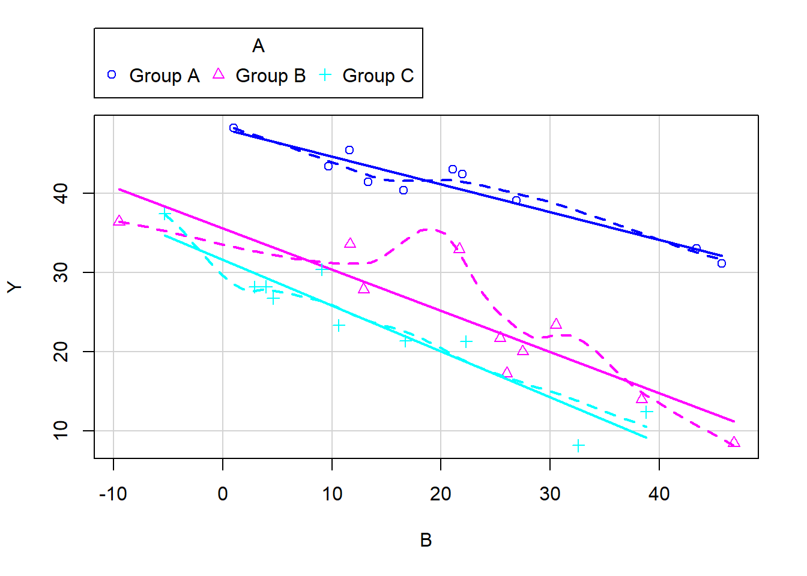
boxplot(Y ~ A, data)# OR via ggplotlibrary(ggplot2)
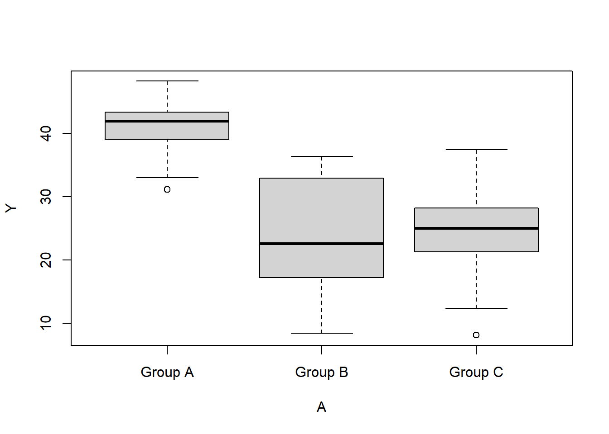
ggplot(data, aes(y = Y, x = B, group = A)) +geom_point() +geom_smooth(method ="lm")
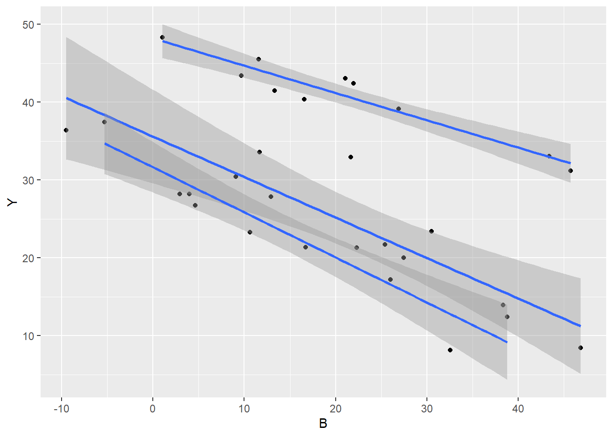
ggplot(data, aes(y = Y, x = A)) +geom_boxplot()
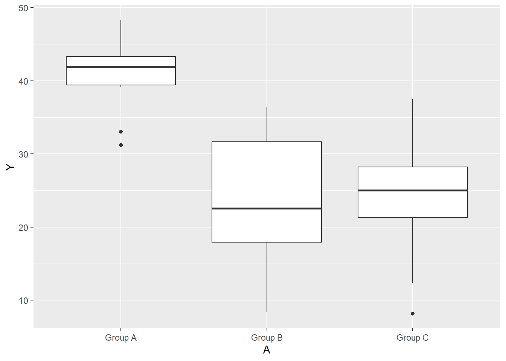
Conclusions
There is no evidence of obvious non-normality. The assumption of linearity seems reasonable. The variability of the three groups seems approximately equal. The slopes (\(Y\) vs B trends) appear broadly similar for each treatment group.
We can explore inferential evidence of unequal slopes by examining estimated effects of the interaction between the categorical variable and the covariate. Note, pay no attention to the main effects - only the interaction. Even though I intend to illustrate Bayesian analyses here, for such a simple model, it is considerably simpler to use traditional OLS for testing for the presence of an interaction.
anova(lm(Y ~ B * A, data = data))
NA Analysis of Variance Table
NA
NA Response: Y
NA Df Sum Sq Mean Sq F value Pr(>F)
NA B 1 989.99 989.99 92.6782 1.027e-09 ***
NA A 2 2320.05 1160.02 108.5956 9.423e-13 ***
NA B:A 2 51.36 25.68 2.4041 0.1118
NA Residuals 24 256.37 10.68
NA ---
NA Signif. codes: 0 '***' 0.001 '**' 0.01 '*' 0.05 '.' 0.1 ' ' 1
There is very little evidence to suggest that the assumption of equal slopes will be inappropriate.
Model fitting
The observed response (\(y_i\)) are assumed to be drawn from a normal distribution with a given mean (\(\mu\)) and standard deviation (\(\sigma\)). The expected values are themselves determined by the linear predictor (\(\boldsymbol X \boldsymbol \beta\)). In this case, \(\boldsymbol \beta\) represents the vector of \(\beta\)’s - the intercept associated with the first group, the (effects) differences between this intercept and the intercepts for each other group as well as the slope associated with the continuous covariate. \(\boldsymbol X\) is the model matrix. MCMC sampling requires priors on all parameters. We will employ weakly informative priors. Specifying ‘uninformative’ priors is always a bit of a balancing act. If the priors are too vague (wide) the MCMC sampler can wander off into nonscence areas of likelihood rather than concentrate around areas of highest likelihood (desired when wanting the outcomes to be largely driven by the data). On the other hand, if the priors are too strong, they may have an influence on the parameters. In such a simple model, this balance is very forgiving - it is for more complex models that prior choice becomes more important. For this simple model, we will go with zero-centered Gaussian (normal) priors with relatively large standard deviations (\(100\)) for both the intercept and the treatment effect and a wide half-cauchy (\(\text{scale}=5\)) for the standard deviation.
\[
y_i \sim N(\mu_i,\sigma),
\]
where \(\mu_i=\beta_0 +\boldsymbol \beta \boldsymbol X\). The assumed priors are: \(\beta \sim N(0,100)\) and \(\sigma \sim \text{Cauchy}(0,5)\). Note, exploratory data analysis suggests that while the intercept (intercept of Group A) and categorical predictor effects (differences between intercepts of each of the Group and Group A’s intercept) could be drawn from a similar distribution (with mean in the \(10\)’s and variances in the \(100\)’s), the slope (effect associated with Group A linear relationship) is likely to be an order of magnitude less. We might therefore be tempted to provide different priors for the intercept, categorical effects and slope effect. For a simple model such as this, it is unlikely to be necessary. However, for more complex models, where prior specification becomes more critical, separate priors would probably be necessary.
We proceed to code the model into JAGS (remember that in this software normal distribution are parameterised in terms of precisions \(\tau\) rather than variances, where \(\tau=\frac{1}{\sigma^2}\)). Note the following example as group means calculated as derived posteriors.
modelString =" model { #Likelihood for (i in 1:n) { y[i]~dnorm(mean[i],tau) mean[i] <- inprod(beta[],X[i,]) } #Priors for (i in 1:ngroups) { beta[i] ~ dnorm(0, 1.0E-6) } sigma ~ dunif(0, 100) tau <- 1 / (sigma * sigma) } "## write the model to a text filewriteLines(modelString, con ="ancovaModel.txt")
Arrange the data as a list (as required by JAGS). As input, JAGS will need to be supplied with: the response variable, the predictor matrix, the number of predictors, the total number of observed items. This all needs to be contained within a list object. We will create two data lists, one for each of the hypotheses.
X <-model.matrix(~A + B, data)data.list <-with(data, list(y = Y, X = X, n =nrow(data), ngroups =ncol(X)))
Define the nodes (parameters and derivatives) to monitor and the chain parameters.
Start the JAGS model (check the model, load data into the model, specify the number of chains and compile the model). Load the R2jags package.
library(R2jags)
Now run the JAGS code via the R2jags interface. Note that the first time jags is run after the R2jags package is loaded, it is often necessary to run any kind of randomization function just to initiate the .Random.seed variable.
NA Compiling model graph
NA Resolving undeclared variables
NA Allocating nodes
NA Graph information:
NA Observed stochastic nodes: 30
NA Unobserved stochastic nodes: 5
NA Total graph size: 224
NA
NA Initializing model
print(data.r2jags)
NA Inference for Bugs model at "ancovaModel.txt", fit using jags,
NA 2 chains, each with 10500 iterations (first 3000 discarded)
NA n.sims = 15000 iterations saved
NA mu.vect sd.vect 2.5% 25% 50% 75% 97.5% Rhat n.eff
NA beta[1] 51.001 1.529 47.977 50.009 50.995 52.016 53.980 1.001 15000
NA beta[2] -16.254 1.623 -19.455 -17.342 -16.259 -15.170 -13.090 1.001 10000
NA beta[3] -20.656 1.667 -23.941 -21.752 -20.672 -19.566 -17.330 1.001 15000
NA beta[4] -0.484 0.048 -0.577 -0.516 -0.484 -0.453 -0.389 1.001 15000
NA sigma 3.607 0.526 2.740 3.236 3.546 3.912 4.793 1.001 7400
NA deviance 160.601 3.509 155.859 158.002 159.905 162.478 169.218 1.001 15000
NA
NA For each parameter, n.eff is a crude measure of effective sample size,
NA and Rhat is the potential scale reduction factor (at convergence, Rhat=1).
NA
NA DIC info (using the rule, pD = var(deviance)/2)
NA pD = 6.2 and DIC = 166.8
NA DIC is an estimate of expected predictive error (lower deviance is better).
MCMC diagnostics
In addition to the regular model diagnostic checks (such as residual plots), for Bayesian analyses, it is necessary to explore the characteristics of the MCMC chains and the sampler in general. Recall that the purpose of MCMC sampling is to replicate the posterior distribution of the model likelihood and priors by drawing a known number of samples from this posterior (thereby formulating a probability distribution). This is only reliable if the MCMC samples accurately reflect the posterior. Unfortunately, since we only know the posterior in the most trivial of circumstances, it is necessary to rely on indirect measures of how accurately the MCMC samples are likely to reflect the likelihood. I will briefly outline the most important diagnostics.
Traceplots for each parameter illustrate the MCMC sample values after each successive iteration along the chain. Bad chain mixing (characterised by any sort of pattern) suggests that the MCMC sampling chains may not have completely traversed all features of the posterior distribution and that more iterations are required to ensure the distribution has been accurately represented.
Autocorrelation plot for each parameter illustrate the degree of correlation between MCMC samples separated by different lags. For example, a lag of \(0\) represents the degree of correlation between each MCMC sample and itself (obviously this will be a correlation of \(1\)). A lag of \(1\) represents the degree of correlation between each MCMC sample and the next sample along the chain and so on. In order to be able to generate unbiased estimates of parameters, the MCMC samples should be independent (uncorrelated).
Potential scale reduction factor (Rhat) statistic for each parameter provides a measure of sampling efficiency/effectiveness. Ideally, all values should be less than \(1.05\). If there are values of \(1.05\) or greater it suggests that the sampler was not very efficient or effective. Not only does this mean that the sampler was potentially slower than it could have been but, more importantly, it could indicate that the sampler spent time sampling in a region of the likelihood that is less informative. Such a situation can arise from either a misspecified model or overly vague priors that permit sampling in otherwise nonscence parameter space.
Prior to examining the summaries, we should have explored the convergence diagnostics. We use the package mcmcplots to obtain density and trace plots for the effects model as an example. When there are a lot of parameters, this can result in a very large number of traceplots. To focus on just certain parameters, e.g. \(\boldsymbol \beta\).
Trace plots show no evidence that the chains have not reasonably traversed the entire multidimensional parameter space. When there are a lot of parameters, this can result in a very large number of traceplots. To focus on just certain parameters (such as \(\beta\)s).
NA [[1]]
NA
NA Quantile (q) = 0.025
NA Accuracy (r) = +/- 0.005
NA Probability (s) = 0.95
NA
NA Burn-in Total Lower bound Dependence
NA (M) (N) (Nmin) factor (I)
NA beta[1] 2 3689 3746 0.985
NA beta[2] 2 3938 3746 1.050
NA beta[3] 2 3853 3746 1.030
NA beta[4] 2 3811 3746 1.020
NA deviance 2 3895 3746 1.040
NA sigma 5 5552 3746 1.480
NA
NA
NA [[2]]
NA
NA Quantile (q) = 0.025
NA Accuracy (r) = +/- 0.005
NA Probability (s) = 0.95
NA
NA Burn-in Total Lower bound Dependence
NA (M) (N) (Nmin) factor (I)
NA beta[1] 2 3770 3746 1.010
NA beta[2] 2 3729 3746 0.995
NA beta[3] 2 3811 3746 1.020
NA beta[4] 2 3895 3746 1.040
NA deviance 2 3855 3746 1.030
NA sigma 4 5247 3746 1.400
The Raftery diagnostics for each chain estimate that we would require no more than \(5000\) samples to reach the specified level of confidence in convergence. As we have \(10500\) samples, we can be confidence that convergence has occurred.
NA beta[1] beta[2] beta[3] beta[4] deviance
NA Lag 0 1.000000000 1.000000000 1.000000000 1.0000000000 1.000000000
NA Lag 1 0.017910611 -0.003186598 0.009149022 0.0039919666 0.266991768
NA Lag 5 -0.004399550 -0.002747041 -0.001891657 -0.0213261543 0.005499734
NA Lag 10 -0.001972741 0.005855050 -0.004887402 0.0186597337 -0.008683579
NA Lag 50 -0.002269863 0.015348324 -0.001446494 -0.0004828212 -0.010725173
NA sigma
NA Lag 0 1.000000000
NA Lag 1 0.382742913
NA Lag 5 0.007377659
NA Lag 10 -0.001255836
NA Lag 50 0.003892668
A lag of 10 appears to be sufficient to avoid autocorrelation (poor mixing).
Model validation
Model validation involves exploring the model diagnostics and fit to ensure that the model is broadly appropriate for the data. As such, exploration of the residuals should be routine. For more complex models (those that contain multiple effects), it is also advisable to plot the residuals against each of the individual predictors. For sampling designs that involve sample collection over space or time, it is also a good idea to explore whether there are any temporal or spatial patterns in the residuals.
There are numerous situations (e.g. when applying specific variance-covariance structures to a model) where raw residuals do not reflect the interior workings of the model. Typically, this is because they do not take into account the variance-covariance matrix or assume a very simple variance-covariance matrix. Since the purpose of exploring residuals is to evaluate the model, for these cases, it is arguably better to draw conclusions based on standardized (or studentised) residuals. Unfortunately the definitions of standardised and studentised residuals appears to vary and the two terms get used interchangeably. I will adopt the following definitions:
Standardised residuals. The raw residuals divided by the true standard deviation of the residuals (which of course is rarely known).
Studentised residuals. The raw residuals divided by the standard deviation of the residuals. Note that externally studentised residuals are calculated by dividing the raw residuals by a unique standard deviation for each observation that is calculated from regressions having left each successive observation out.
Pearson residuals. The raw residuals divided by the standard deviation of the response variable.
he mark of a good model is being able to predict well. In an ideal world, we would have sufficiently large sample size as to permit us to hold a fraction (such as \(25\)%) back thereby allowing us to train the model on \(75\)% of the data and then see how well the model can predict the withheld \(25\)%. Unfortunately, such a luxury is still rare. The next best option is to see how well the model can predict the observed data. Models tend to struggle most with the extremes of trends and have particular issues when the extremes approach logical boundaries (such as zero for count data and standard deviations). We can use the fitted model to generate random predicted observations and then explore some properties of these compared to the actual observed data.
Rather than dublicate this for both additive and multiplicative models, we will only explore the multiplicative model. Residuals are not computed directly within JAGS. However, we can calculate them manually form the posteriors.
library(dplyr)mcmc = data.r2jags$BUGSoutput$sims.matrix %>% as.data.frame %>% dplyr:::select(contains("beta"), sigma) %>% as.matrix# generate a model matrixnewdata = dataXmat =model.matrix(~A + B, newdata)## get median parameter estimatescoefs =apply(mcmc[, 1:4], 2, median)fit =as.vector(coefs %*%t(Xmat))resid = data$Y - fitggplot() +geom_point(data =NULL, aes(y = resid, x = fit)) +theme_classic()
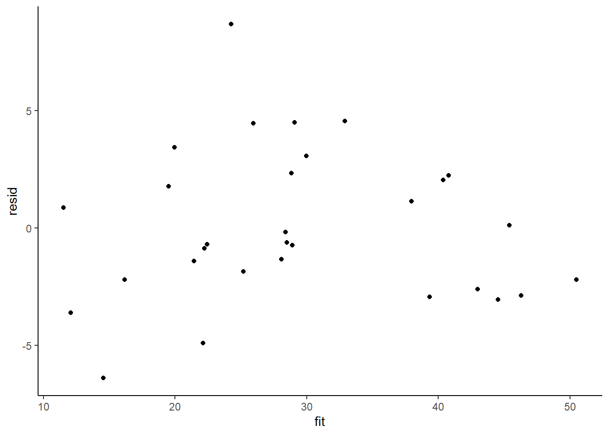
Residuals against predictors
library(tidyr)mcmc = data.r2jags$BUGSoutput$sims.matrix %>% as.data.frame %>% dplyr:::select(contains("beta"), sigma) %>% as.matrix# generate a model matrixnewdata = newdataXmat =model.matrix(~A + B, newdata)## get median parameter estimatescoefs =apply(mcmc[, 1:4], 2, median)fit =as.vector(coefs %*%t(Xmat))resid = data$Y - fitnewdata = newdata %>%cbind(fit, resid)ggplot(newdata) +geom_point(aes(y = resid, x = A)) +theme_classic()
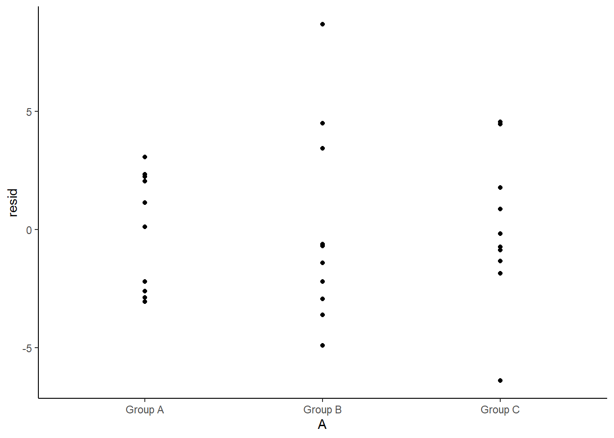
ggplot(newdata) +geom_point(aes(y = resid, x = B)) +theme_classic()
And now for studentised residuals
mcmc = data.r2jags$BUGSoutput$sims.matrix %>% as.data.frame %>% dplyr:::select(contains("beta"), sigma) %>% as.matrix# generate a model matrixnewdata = dataXmat =model.matrix(~A + B, newdata)## get median parameter estimatescoefs =apply(mcmc[, 1:4], 2, median)fit =as.vector(coefs %*%t(Xmat))resid = data$Y - fitsresid = resid/sd(resid)ggplot() +geom_point(data =NULL, aes(y = sresid, x = fit)) +theme_classic()
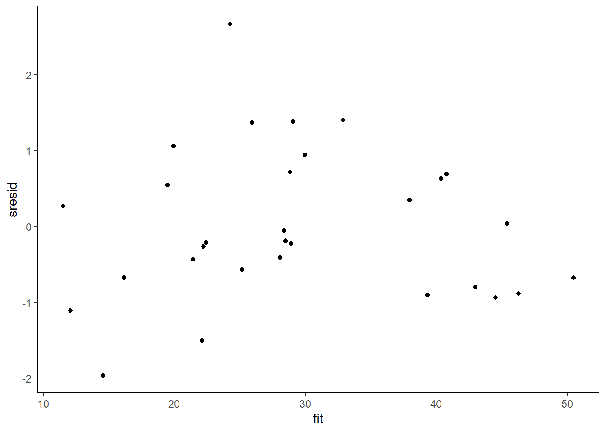
For this simple model, the studentised residuals yield the same pattern as the raw residuals (or the Pearson residuals for that matter). Lets see how well data simulated from the model reflects the raw data.
mcmc = data.r2jags$BUGSoutput$sims.matrix %>% as.data.frame %>% dplyr:::select(contains("beta"), sigma) %>% as.matrix# generate a model matrixXmat =model.matrix(~A + B, data)## get median parameter estimatescoefs = mcmc[, 1:4]fit = coefs %*%t(Xmat)## draw samples from this modelyRep =sapply(1:nrow(mcmc), function(i) rnorm(nrow(data), fit[i, ], mcmc[i, "sigma"]))newdata =data.frame(A = data$A, B = data$B, yRep) %>%gather(key = Sample,value = Value, -A, -B)ggplot(newdata) +geom_violin(aes(y = Value, x = A, fill ="Model"),alpha =0.5) +geom_violin(data = data, aes(y = Y, x = A,fill ="Obs"), alpha =0.5) +geom_point(data = data, aes(y = Y,x = A), position =position_jitter(width =0.1, height =0),color ="black") +theme_classic()
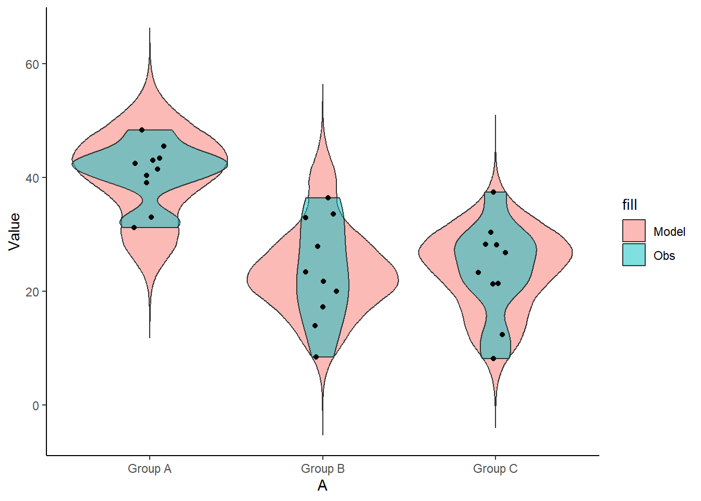
ggplot(newdata) +geom_violin(aes(y = Value, x = B, fill ="Model",group = B, color = A), alpha =0.5) +geom_point(data = data,aes(y = Y, x = B, group = B, color = A)) +theme_classic()
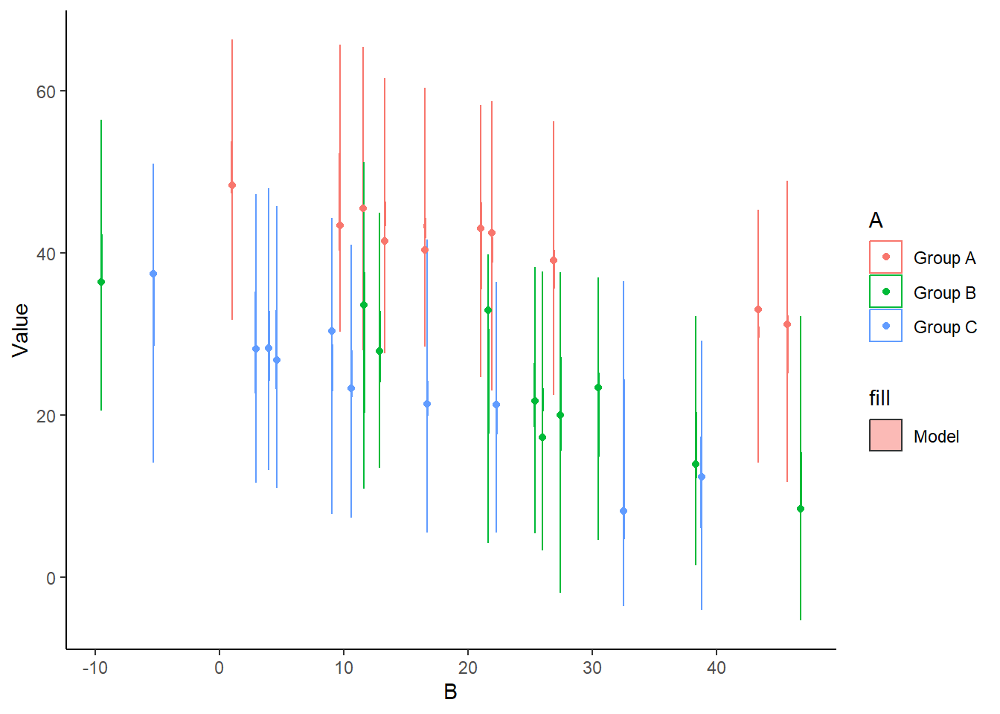
The predicted trends do encapsulate the actual data, suggesting that the model is a reasonable representation of the underlying processes. Note, these are prediction intervals rather than confidence intervals as we are seeking intervals within which we can predict individual observations rather than means. We can also explore the posteriors of each parameter.
Although all parameters in a Bayesian analysis are considered random and are considered a distribution, rarely would it be useful to present tables of all the samples from each distribution. On the other hand, plots of the posterior distributions have some use. Nevertheless, most workers prefer to present simple statistical summaries of the posteriors. Popular choices include the median (or mean) and \(95\)% credibility intervals.
mcmcpvalue <-function(samp) {## elementary version that creates an empirical p-value for the## hypothesis that the columns of samp have mean zero versus a general## multivariate distribution with elliptical contours.## differences from the mean standardized by the observed## variance-covariance factor## Note, I put in the bit for single termsif (length(dim(samp)) ==0) { std <-backsolve(chol(var(samp)), cbind(0, t(samp)) -mean(samp),transpose =TRUE) sqdist <-colSums(std * std)sum(sqdist[-1] > sqdist[1])/length(samp) } else { std <-backsolve(chol(var(samp)), cbind(0, t(samp)) -colMeans(samp),transpose =TRUE) sqdist <-colSums(std * std)sum(sqdist[-1] > sqdist[1])/nrow(samp) }}
First, we look at the results from the additive model.
print(data.r2jags)
NA Inference for Bugs model at "ancovaModel.txt", fit using jags,
NA 2 chains, each with 10500 iterations (first 3000 discarded)
NA n.sims = 15000 iterations saved
NA mu.vect sd.vect 2.5% 25% 50% 75% 97.5% Rhat n.eff
NA beta[1] 51.001 1.529 47.977 50.009 50.995 52.016 53.980 1.001 15000
NA beta[2] -16.254 1.623 -19.455 -17.342 -16.259 -15.170 -13.090 1.001 10000
NA beta[3] -20.656 1.667 -23.941 -21.752 -20.672 -19.566 -17.330 1.001 15000
NA beta[4] -0.484 0.048 -0.577 -0.516 -0.484 -0.453 -0.389 1.001 15000
NA sigma 3.607 0.526 2.740 3.236 3.546 3.912 4.793 1.001 7400
NA deviance 160.601 3.509 155.859 158.002 159.905 162.478 169.218 1.001 15000
NA
NA For each parameter, n.eff is a crude measure of effective sample size,
NA and Rhat is the potential scale reduction factor (at convergence, Rhat=1).
NA
NA DIC info (using the rule, pD = var(deviance)/2)
NA pD = 6.2 and DIC = 166.8
NA DIC is an estimate of expected predictive error (lower deviance is better).
NA # A tibble: 5 × 5
NA term estimate std.error conf.low conf.high
NA <chr> <dbl> <dbl> <dbl> <dbl>
NA 1 beta[1] 51.0 1.53 48.0 53.9
NA 2 beta[2] -16.3 1.62 -19.5 -13.1
NA 3 beta[3] -20.7 1.67 -23.9 -17.3
NA 4 beta[4] -0.484 0.0478 -0.577 -0.389
NA 5 sigma 3.61 0.526 2.69 4.70
Conclusions
The intercept of the first group (Group A) is \(51\).
The mean of the second group (Group B) is \(-16.3\) units greater than (A).
The mean of the third group (Group C) is \(-20.7\) units greater than (A).
A one unit increase in B in Group A is associated with a \(-0.484\) units increase in \(Y\).
The \(95\)% confidence interval for the effects of Group B, Group C and the partial slope associated with B do not overlapp with 0 implying a significant difference between group A and groups B, C and a significant negative relationship with B. While workers attempt to become comfortable with a new statistical framework, it is only natural that they like to evaluate and comprehend new structures and output alongside more familiar concepts. One way to facilitate this is via Bayesian p-values that are somewhat analogous to the frequentist p-values for investigating the hypothesis that a parameter is equal to zero.
## since values are less than zeromcmcpvalue(data.r2jags$BUGSoutput$sims.matrix[, "beta[2]"]) # effect of (B-A = 0)
NA [1] 0
mcmcpvalue(data.r2jags$BUGSoutput$sims.matrix[, "beta[3]"]) # effect of (C-A = 0)
NA [1] 0
mcmcpvalue(data.r2jags$BUGSoutput$sims.matrix[, "beta[4]"]) # effect of (slope = 0)
NA [1] 0
mcmcpvalue(data.r2jags$BUGSoutput$sims.matrix[, 2:4]) # effect of (model)
NA [1] 0
There is evidence that the reponse differs between the groups.
Graphical summaries
A nice graphic is often a great accompaniment to a statistical analysis. Although there are no fixed assumptions associated with graphing (in contrast to statistical analyses), we often want the graphical summaries to reflect the associated statistical analyses. After all, the sample is just one perspective on the population(s). What we are more interested in is being able to estimate and depict likely population parameters/trends. Thus, whilst we could easily provide a plot displaying the raw data along with simple measures of location and spread, arguably, we should use estimates that reflect the fitted model. In this case, it would be appropriate to plot the credibility interval associated with each group.
As this is simple single factor ANOVA, we can simple add the raw data to this figure. For more complex designs with additional predictors, it is necessary to plot partial residuals.
In frequentist statistics, when we have more than two groups, we are typically not only interested in whether there is evidence for an overall “effect” of a factor - we are also interested in how various groups compare to one another. To explore these trends, we either compare each group to each other in a pairwise manner (controlling for family-wise Type I error rates) or we explore an independent subset of the possible comparisons. Although these alternate approaches can adequately address a specific research agenda, often they impose severe limitations and compromises on the scope and breadth of questions that can be asked of your data. The reason for these limitations is that in a frequentist framework, any single hypothesis carries with it a (nominally) \(5\)% chance of a false rejection (since it is based on long-run frequency). Thus, performing multiple tests are likely to compound this error rate. The point is, that each comparison is compared to its own probability distribution (and each carries a \(5\)% error rate). By contrast, in Bayesian statistics, all comparisons (contrasts) are drawn from the one (hopefully stable and convergent) posterior distribution and this posterior is invariant to the type and number of comparisons drawn. Hence, the theory clearly indicates that having generated our posterior distribution, we can then query this distribution in any way that we wish thereby allowing us to explore all of our research questions simultaneously.
Bayesian “contrasts” can be performed either:
within the Bayesian sampling model or
construct them from the returned MCMC samples (they are drawn from the posteriors)
Only the latter will be demonstrated as it provides a consistent approach across all routines. In order to allow direct comparison to the frequentist equivalents, I will explore the same set of planned and Tukey’s test comparisons described here. For the “planned comparison” we defined two contrasts: 1) group B vs group C; and 2) group A vs the average of groups B and C. Of course each of these could be explored at multiple values of B, however, since we fit an additive model (which assumes that the slopes are homogeneous), the contrasts will be constant throughout the domain of B.
Lets start by comparing each group to each other group in a pairwise manner. Arguably the most elegant way to do this is to generate a Tukey’s contrast matrix. This is a model matrix specific to comparing each group to each other group. Again, since the lines are parallel, it does not really matter what level of B we estimate these efffects at - so lets use the mean B.
mcmc = data.r2jags$BUGSoutput$sims.matrixcoefs <-as.matrix(mcmc)[, 1:4]newdata <-data.frame(A =levels(data$A), B =mean(data$B))# A Tukeys contrast matrixlibrary(multcomp)tuk.mat <-contrMat(n =table(newdata$A), type ="Tukey")Xmat <-model.matrix(~A + B, data = newdata)pairwise.mat <- tuk.mat %*% Xmatpairwise.mat
NA (Intercept) AGroup B AGroup C B
NA Group B - Group A 0 1 0 0
NA Group C - Group A 0 0 1 0
NA Group C - Group B 0 -1 1 0
NA # A tibble: 3 × 5
NA term estimate std.error conf.low conf.high
NA <chr> <dbl> <dbl> <dbl> <dbl>
NA 1 Group B - Group A -16.3 1.62 -19.5 -13.1
NA 2 Group C - Group A -20.7 1.67 -23.9 -17.3
NA 3 Group C - Group B -4.40 1.69 -7.68 -1.04
With a couple of modifications, we could also express this as percentage changes. A percentage change represents the change (difference between groups) divided by one of the groups (determined by which group you want to express the percentage change to). Hence, we generate an additional mcmc matrix that represents the cell means for the divisor group (group we want to express change relative to). Since the tuk.mat defines comparisons as \(-1\) and \(1\) pairs, if we simply replace all the \(-1\) with \(0\), the eventual matrix multiplication will result in estimates of the divisor cell means instead of the difference. We can then divide the original mcmc matrix above with this new divisor mcmc matrix to yeild a mcmc matrix of percentage change.
# Modify the tuk.mat to replace -1 with 0. This will allow us to get a# mcmc matrix of ..tuk.mat[tuk.mat ==-1] =0comp.mat <- tuk.mat %*% Xmatcomp.mat
NA (Intercept) AGroup B AGroup C B
NA Group B - Group A 1 1 0 19.29344
NA Group C - Group A 1 0 1 19.29344
NA Group C - Group B 1 0 1 19.29344
NA # A tibble: 3 × 5
NA term estimate std.error conf.low conf.high
NA <chr> <dbl> <dbl> <dbl> <dbl>
NA 1 Group B - Group A -64.3 8.74 -82.4 -48.0
NA 2 Group C - Group A -99.0 12.6 -124. -74.8
NA 3 Group C - Group B -21.4 9.02 -39.2 -4.13
And now for the specific planned comparisons (Group B vs Group C as well as Group A vs the average of Groups B and C). This is achieved by generating our own contrast matrix (defining the contributions of each group to each contrast).
NA # A tibble: 2 × 5
NA term estimate std.error conf.low conf.high
NA <chr> <dbl> <dbl> <dbl> <dbl>
NA 1 var1 4.40 1.69 1.04 7.68
NA 2 var2 5.36 0.790 3.80 6.93
Finite population standard deviations
Variance components, the amount of added variance attributed to each influence, are traditionally estimated for so called random effects. These are the effects for which the levels employed in the design are randomly selected to represent a broader range of possible levels. For such effects, effect sizes (differences between each level and a reference level) are of little value. Instead, the “importance” of the variables are measured in units of variance components. On the other hand, regular variance components for fixed factors (those whose measured levels represent the only levels of interest) are not logical - since variance components estimate variance as if the levels are randomly selected from a larger population. Nevertheless, in order to compare and contrast the scale of variability of both fixed and random factors, it is necessary to measure both on the same scale (sample or population based variance).
Finite-population variance components assume that the levels of all factors (fixed and random) in the design are all the possible levels available (Gelman et al. (2005)). In other words, they are assumed to represent finite populations of levels. Sample (rather than population) statistics are then used to calculate these finite-population variances (or standard deviations). Since standard deviation (and variance) are bound at zero, standard deviation posteriors are typically non-normal. Consequently, medians and HPD intervals are more robust estimates.
NA beta[1] beta[2] beta[3] beta[4] deviance sigma
NA [1,] 49.12140 -12.79223 -18.26477 -0.4972722 161.2762 3.888826
NA [2,] 51.03351 -16.80051 -20.03944 -0.4767683 156.2198 2.958015
NA [3,] 51.55756 -16.80292 -20.00531 -0.4479209 161.2724 3.984268
NA [4,] 50.15508 -15.15637 -21.01837 -0.4787121 158.5376 3.943798
NA [5,] 52.94683 -17.04043 -22.95279 -0.5209229 157.8834 3.194266
NA [6,] 52.16920 -17.91313 -23.53270 -0.4678091 159.4251 3.239537
NA # A tibble: 3 × 5
NA term estimate std.error conf.low conf.high
NA <chr> <dbl> <dbl> <dbl> <dbl>
NA 1 sd.A 3.12 1.18 0.739 5.41
NA 2 sd.B 7.12 0.703 5.73 8.49
NA 3 sd.resid 3.46 0.169 3.26 3.79
NA # A tibble: 3 × 5
NA term estimate std.error conf.low conf.high
NA <chr> <dbl> <dbl> <dbl> <dbl>
NA 1 sd.A 22.2 6.62 8.09 34.1
NA 2 sd.B 52.3 4.54 43.1 61.2
NA 3 sd.resid 25.6 3.22 20.8 31.9
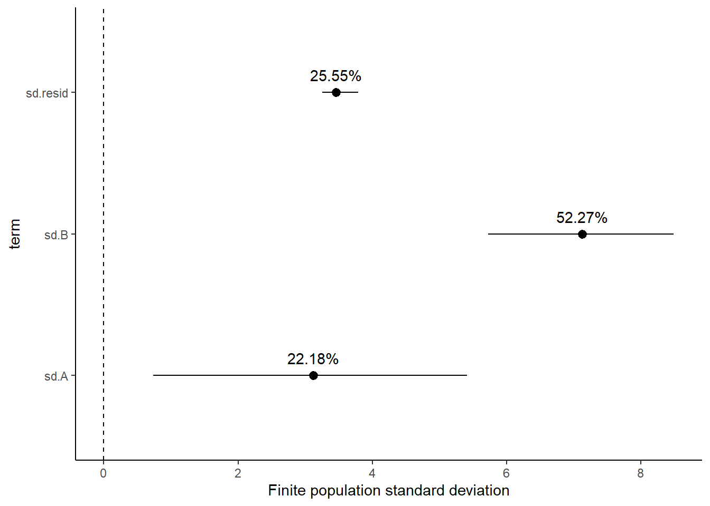
Approximately \(22.9\)% of the total finite population standard deviation is due to \(x\).
R squared
In a frequentist context, the \(R^2\) value is seen as a useful indicator of goodness of fit. Whilst it has long been acknowledged that this measure is not appropriate for comparing models (for such purposes information criterion such as AIC are more appropriate), it is nevertheless useful for estimating the amount (percent) of variance explained by the model. In a frequentist context, \(R^2\) is calculated as the variance in predicted values divided by the variance in the observed (response) values. Unfortunately, this classical formulation does not translate simply into a Bayesian context since the equivalently calculated numerator can be larger than the an equivalently calculated denominator - thereby resulting in an \(R^2\) greater than \(100\)%. Gelman et al. (2019) proposed an alternative formulation in which the denominator comprises the sum of the explained variance and the variance of the residuals.
So in the standard regression model notation of:
\[
y_i \sim \text{Normal}(\boldsymbol X \boldsymbol \beta, \sigma),
\]
NA # A tibble: 1 × 5
NA term estimate std.error conf.low conf.high
NA <chr> <dbl> <dbl> <dbl> <dbl>
NA 1 var1 0.905 0.0148 0.877 0.922
# for comparison with frequentistsummary(lm(Y ~ A + B, data))
NA
NA Call:
NA lm(formula = Y ~ A + B, data = data)
NA
NA Residuals:
NA Min 1Q Median 3Q Max
NA -6.4381 -2.2244 -0.6829 2.1732 8.6607
NA
NA Coefficients:
NA Estimate Std. Error t value Pr(>|t|)
NA (Intercept) 51.00608 1.44814 35.22 < 2e-16 ***
NA AGroup B -16.25472 1.54125 -10.55 6.92e-11 ***
NA AGroup C -20.65596 1.57544 -13.11 5.74e-13 ***
NA B -0.48399 0.04526 -10.69 5.14e-11 ***
NA ---
NA Signif. codes: 0 '***' 0.001 '**' 0.01 '*' 0.05 '.' 0.1 ' ' 1
NA
NA Residual standard error: 3.44 on 26 degrees of freedom
NA Multiple R-squared: 0.9149, Adjusted R-squared: 0.9051
NA F-statistic: 93.22 on 3 and 26 DF, p-value: 4.901e-14
Dealing with heterogeneous slopes
Generate the data with heterogeneous slope effects.
NA A B Y
NA 1 Group A 11.59287 45.48907
NA 2 Group A 16.54734 40.37341
NA 3 Group A 43.38062 33.05922
NA 4 Group A 21.05763 43.03660
NA 5 Group A 21.93932 42.41363
NA 6 Group A 45.72597 31.17787
Exploratory data analysis
scatterplot(Y ~ B | A, data = data1)
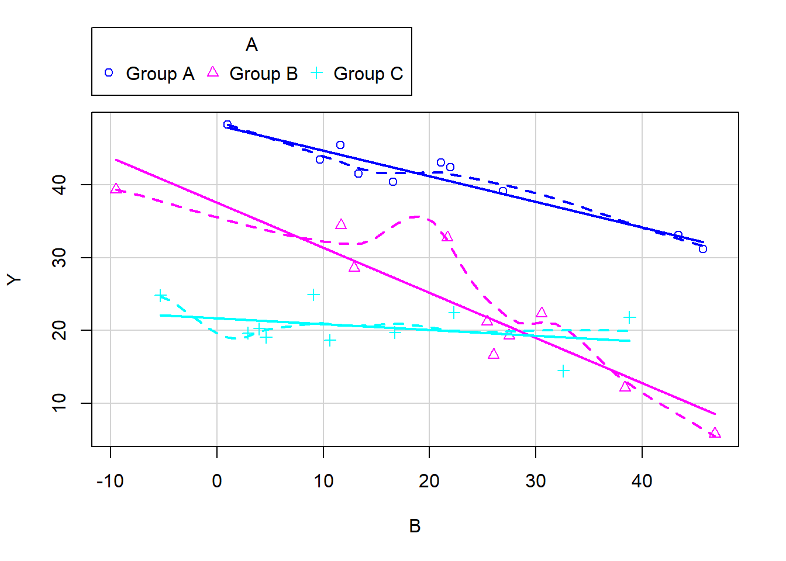
boxplot(Y ~ A, data1)
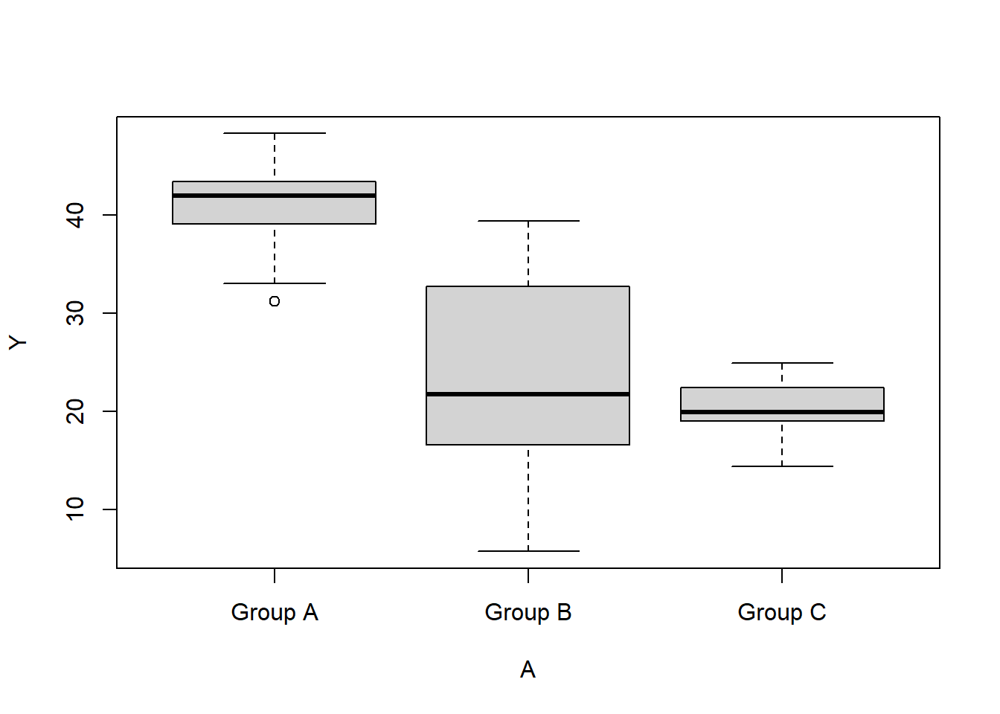
# OR via ggplotggplot(data1, aes(y = Y, x = B, group = A)) +geom_point() +geom_smooth(method ="lm")
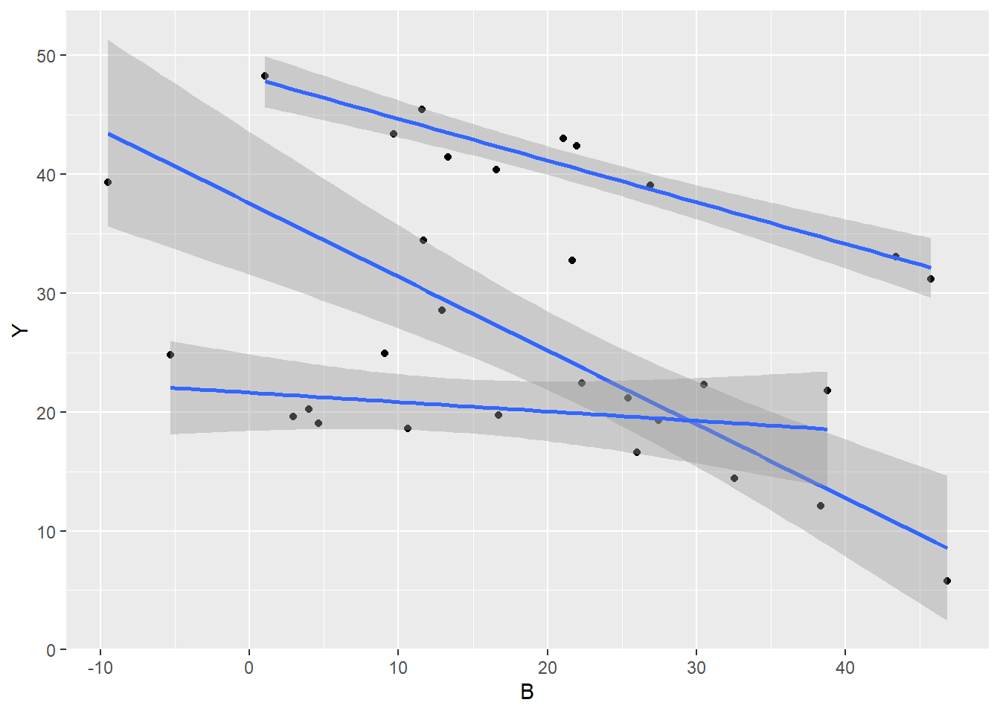
ggplot(data1, aes(y = Y, x = A)) +geom_boxplot()
The slopes (\(Y\) vs B trends) do appear to differ between treatment groups - in particular, Group C seems to portray a different trend to Groups A and B.
anova(lm(Y ~ B * A, data = data1))
NA Analysis of Variance Table
NA
NA Response: Y
NA Df Sum Sq Mean Sq F value Pr(>F)
NA B 1 442.02 442.02 41.380 1.187e-06 ***
NA A 2 2760.60 1380.30 129.217 1.418e-13 ***
NA B:A 2 285.75 142.87 13.375 0.0001251 ***
NA Residuals 24 256.37 10.68
NA ---
NA Signif. codes: 0 '***' 0.001 '**' 0.01 '*' 0.05 '.' 0.1 ' ' 1
There is strong evidence to suggest that the assumption of equal slopes is violated.
Fitting the model
modelString2 =" model { #Likelihood for (i in 1:n) { y[i]~dnorm(mean[i],tau) mean[i] <- inprod(beta[],X[i,]) } #Priors for (i in 1:ngroups) { beta[i] ~ dnorm(0, 1.0E-6) } sigma ~ dunif(0, 100) tau <- 1 / (sigma * sigma) } "## write the model to a text filewriteLines(modelString2, con ="ancovaModel2.txt")
Arrange the data as a list (as required by JAGS). As input, JAGS will need to be supplied with: the response variable, the predictor matrix, the number of predictors, the total number of observed items. This all needs to be contained within a list object. We will create two data lists, one for each of the hypotheses.
X <-model.matrix(~A * B, data1)data1.list <-with(data1, list(y = Y, X = X, n =nrow(data1), ngroups =ncol(X)))
Define the nodes (parameters and derivatives) to monitor and the chain parameters.
NA Compiling model graph
NA Resolving undeclared variables
NA Allocating nodes
NA Graph information:
NA Observed stochastic nodes: 30
NA Unobserved stochastic nodes: 7
NA Total graph size: 286
NA
NA Initializing model
print(data1.r2jags)
NA Inference for Bugs model at "ancovaModel2.txt", fit using jags,
NA 2 chains, each with 10500 iterations (first 3000 discarded)
NA n.sims = 15000 iterations saved
NA mu.vect sd.vect 2.5% 25% 50% 75% 97.5% Rhat n.eff
NA beta[1] 48.194 2.035 44.200 46.864 48.200 49.531 52.217 1.001 15000
NA beta[2] -10.562 2.884 -16.240 -12.453 -10.586 -8.688 -4.814 1.001 8100
NA beta[3] -26.538 2.568 -31.636 -28.207 -26.525 -24.858 -21.431 1.001 15000
NA beta[4] -0.351 0.082 -0.512 -0.404 -0.351 -0.297 -0.188 1.001 15000
NA beta[5] -0.271 0.110 -0.491 -0.344 -0.270 -0.198 -0.055 1.001 15000
NA beta[6] 0.270 0.117 0.039 0.194 0.270 0.346 0.500 1.001 15000
NA sigma 3.454 0.535 2.601 3.074 3.396 3.757 4.689 1.002 1800
NA deviance 157.761 4.417 151.465 154.544 156.990 160.166 168.119 1.001 3000
NA
NA For each parameter, n.eff is a crude measure of effective sample size,
NA and Rhat is the potential scale reduction factor (at convergence, Rhat=1).
NA
NA DIC info (using the rule, pD = var(deviance)/2)
NA pD = 9.8 and DIC = 167.5
NA DIC is an estimate of expected predictive error (lower deviance is better).
MCMC diagnostics
denplot(data1.r2jags, parms =c("beta"))
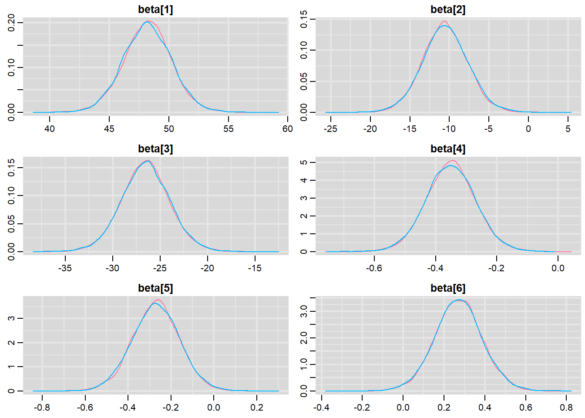
traplot(data1.r2jags, parms =c("beta"))
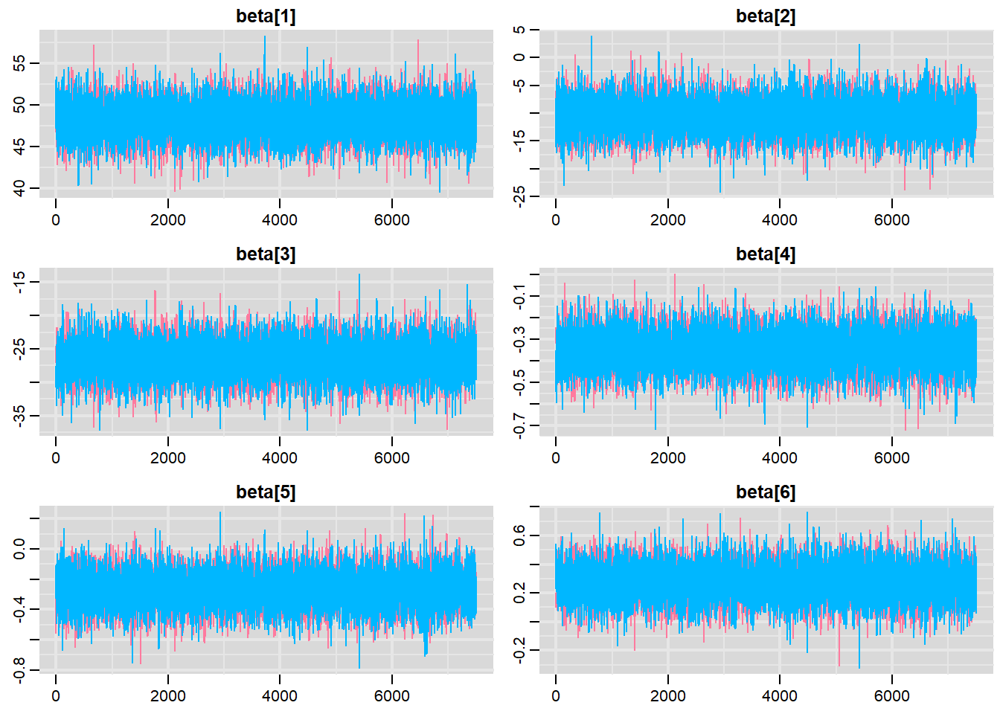
Trace plots show no evidence that the chains have not reasonably traversed the entire multidimensional parameter space. When there are a lot of parameters, this can result in a very large number of traceplots. To focus on just certain parameters (such as \(\beta\)s).
NA [[1]]
NA
NA Quantile (q) = 0.025
NA Accuracy (r) = +/- 0.005
NA Probability (s) = 0.95
NA
NA Burn-in Total Lower bound Dependence
NA (M) (N) (Nmin) factor (I)
NA beta[1] 2 3853 3746 1.030
NA beta[2] 2 3689 3746 0.985
NA beta[3] 2 3895 3746 1.040
NA beta[4] 2 3649 3746 0.974
NA beta[5] 2 3918 3746 1.050
NA beta[6] 2 3770 3746 1.010
NA deviance 2 3938 3746 1.050
NA sigma 4 5018 3746 1.340
NA
NA
NA [[2]]
NA
NA Quantile (q) = 0.025
NA Accuracy (r) = +/- 0.005
NA Probability (s) = 0.95
NA
NA Burn-in Total Lower bound Dependence
NA (M) (N) (Nmin) factor (I)
NA beta[1] 2 3853 3746 1.030
NA beta[2] 2 3570 3746 0.953
NA beta[3] 2 3811 3746 1.020
NA beta[4] 2 3770 3746 1.010
NA beta[5] 2 3770 3746 1.010
NA beta[6] 2 3895 3746 1.040
NA deviance 2 3981 3746 1.060
NA sigma 4 5131 3746 1.370
The Raftery diagnostics for each chain estimate that we would require no more than \(5000\) samples to reach the specified level of confidence in convergence. As we have \(10500\) samples, we can be confidence that convergence has occurred.
NA beta[1] beta[2] beta[3] beta[4] beta[5]
NA Lag 0 1.000000000 1.000000000 1.000000000 1.000000000 1.0000000000
NA Lag 1 -0.002520665 -0.007698073 0.001992162 0.000509790 -0.0005326877
NA Lag 5 0.001007950 0.009095032 0.001511518 -0.006890623 0.0025773251
NA Lag 10 -0.011280919 0.007907450 0.005969613 -0.006999313 0.0040454668
NA Lag 50 -0.012861369 -0.019813696 0.002604518 -0.008791380 -0.0136623372
NA beta[6] deviance sigma
NA Lag 0 1.000000000 1.000000000 1.0000000000
NA Lag 1 0.004381248 0.332075434 0.4518687724
NA Lag 5 -0.001182603 0.032092130 0.0351574955
NA Lag 10 -0.004191097 0.003338842 0.0005457235
NA Lag 50 0.002636154 -0.005426687 0.0039447210
Model validation
mcmc = data1.r2jags$BUGSoutput$sims.matrix %>% as.data.frame %>% dplyr:::select(contains("beta"), sigma) %>% as.matrix# generate a model matrixnewdata1 = data1Xmat =model.matrix(~A * B, newdata1)## get median parameter estimatescoefs =apply(mcmc[, 1:6], 2, median)fit =as.vector(coefs %*%t(Xmat))resid = data1$Y - fitggplot() +geom_point(data =NULL, aes(y = resid, x = fit)) +theme_classic()
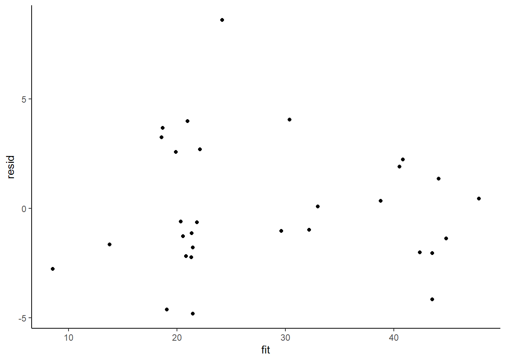
Residuals against predictors
mcmc = data1.r2jags$BUGSoutput$sims.matrix %>% as.data.frame %>% dplyr:::select(contains("beta"), sigma) %>% as.matrix# generate a model matrixnewdata1 = newdata1Xmat =model.matrix(~A * B, newdata1)## get median parameter estimatescoefs =apply(mcmc[, 1:6], 2, median)fit =as.vector(coefs %*%t(Xmat))resid = data1$Y - fitnewdata1 = newdata1 %>%cbind(fit, resid)ggplot(newdata1) +geom_point(aes(y = resid, x = A)) +theme_classic()
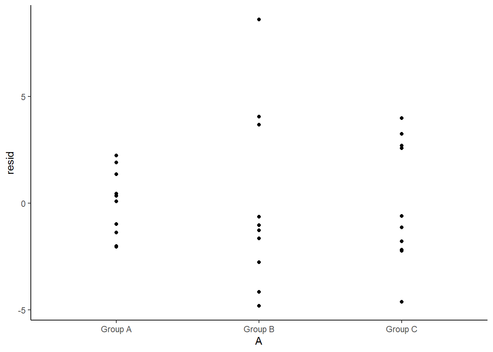
ggplot(newdata1) +geom_point(aes(y = resid, x = B)) +theme_classic()
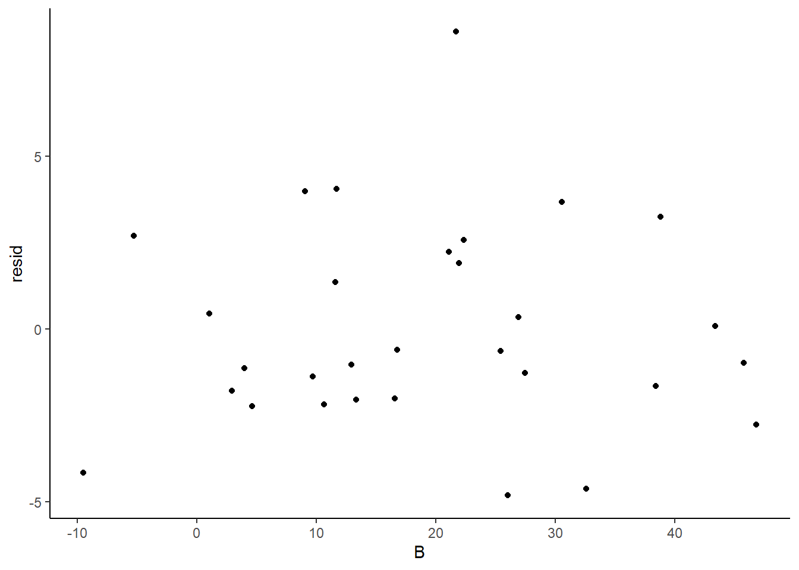
And now for studentised residuals
mcmc = data1.r2jags$BUGSoutput$sims.matrix %>% as.data.frame %>% dplyr:::select(contains("beta"), sigma) %>% as.matrix# generate a model matrixnewdata1 = data1Xmat =model.matrix(~A * B, newdata1)## get median parameter estimatescoefs =apply(mcmc[, 1:6], 2, median)fit =as.vector(coefs %*%t(Xmat))resid = data1$Y - fitsresid = resid/sd(resid)ggplot() +geom_point(data1 =NULL, aes(y = sresid, x = fit)) +theme_classic()
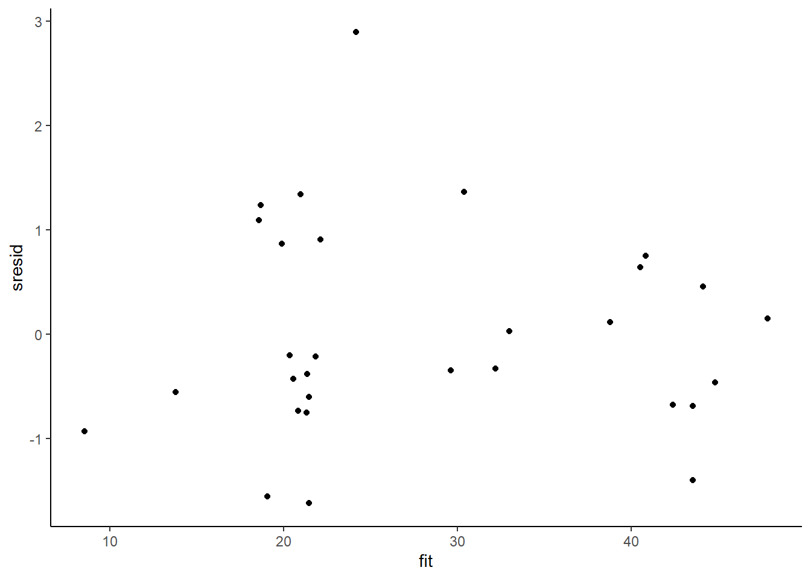
For this simple model, the studentised residuals yield the same pattern as the raw residuals (or the Pearson residuals for that matter). Lets see how well data simulated from the model reflects the raw data.
mcmc = data1.r2jags$BUGSoutput$sims.matrix %>% as.data.frame %>% dplyr:::select(contains("beta"), sigma) %>% as.matrix# generate a model matrixXmat =model.matrix(~A * B, data1)## get median parameter estimatescoefs = mcmc[, 1:6]fit = coefs %*%t(Xmat)## draw samples from this modelyRep =sapply(1:nrow(mcmc), function(i) rnorm(nrow(data1), fit[i, ], mcmc[i, "sigma"]))newdata1 =data.frame(A = data1$A, B = data1$B, yRep) %>%gather(key = Sample,value = Value, -A, -B)ggplot(newdata1) +geom_violin(aes(y = Value, x = A, fill ="Model"),alpha =0.5) +geom_violin(data = data1, aes(y = Y, x = A,fill ="Obs"), alpha =0.5) +geom_point(data = data1, aes(y = Y,x = A), position =position_jitter(width =0.1, height =0),color ="black") +theme_classic()
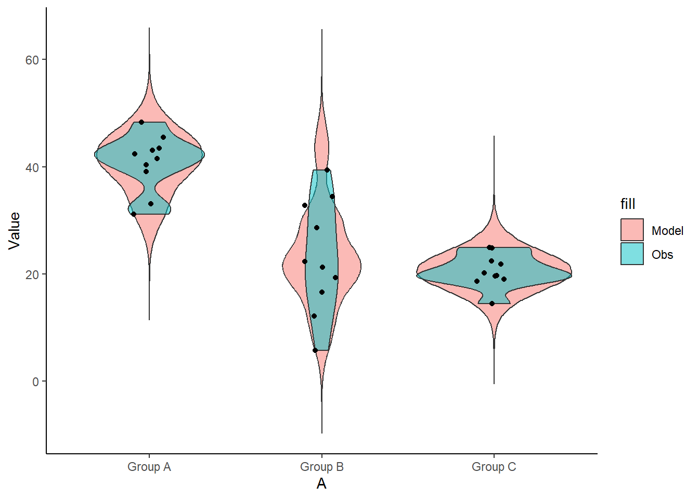
ggplot(newdata1) +geom_violin(aes(y = Value, x = B, fill ="Model",group = B, color = A), alpha =0.5) +geom_point(data = data1,aes(y = Y, x = B, group = B, color = A)) +theme_classic()
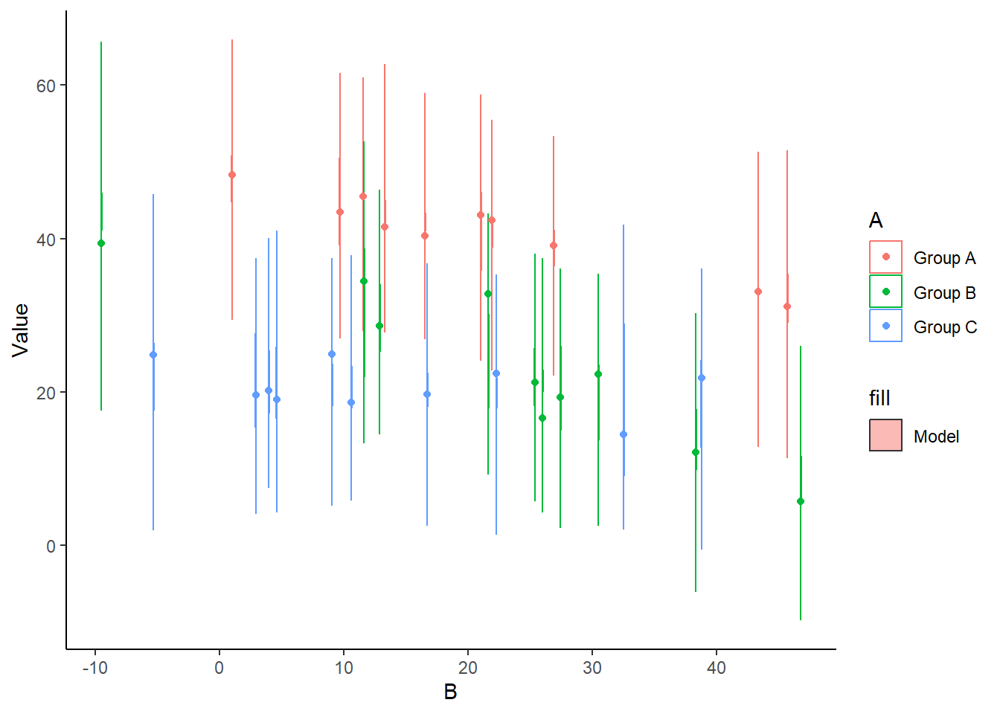
The predicted trends do encapsulate the actual data, suggesting that the model is a reasonable representation of the underlying processes. Note, these are prediction intervals rather than confidence intervals as we are seeking intervals within which we can predict individual observations rather than means. We can also explore the posteriors of each parameter.
First, we look at the results from the additive model.
print(data1.r2jags)
NA Inference for Bugs model at "ancovaModel2.txt", fit using jags,
NA 2 chains, each with 10500 iterations (first 3000 discarded)
NA n.sims = 15000 iterations saved
NA mu.vect sd.vect 2.5% 25% 50% 75% 97.5% Rhat n.eff
NA beta[1] 48.194 2.035 44.200 46.864 48.200 49.531 52.217 1.001 15000
NA beta[2] -10.562 2.884 -16.240 -12.453 -10.586 -8.688 -4.814 1.001 8100
NA beta[3] -26.538 2.568 -31.636 -28.207 -26.525 -24.858 -21.431 1.001 15000
NA beta[4] -0.351 0.082 -0.512 -0.404 -0.351 -0.297 -0.188 1.001 15000
NA beta[5] -0.271 0.110 -0.491 -0.344 -0.270 -0.198 -0.055 1.001 15000
NA beta[6] 0.270 0.117 0.039 0.194 0.270 0.346 0.500 1.001 15000
NA sigma 3.454 0.535 2.601 3.074 3.396 3.757 4.689 1.002 1800
NA deviance 157.761 4.417 151.465 154.544 156.990 160.166 168.119 1.001 3000
NA
NA For each parameter, n.eff is a crude measure of effective sample size,
NA and Rhat is the potential scale reduction factor (at convergence, Rhat=1).
NA
NA DIC info (using the rule, pD = var(deviance)/2)
NA pD = 9.8 and DIC = 167.5
NA DIC is an estimate of expected predictive error (lower deviance is better).
NA # A tibble: 7 × 5
NA term estimate std.error conf.low conf.high
NA <chr> <dbl> <dbl> <dbl> <dbl>
NA 1 beta[1] 48.2 2.03 44.2 52.2
NA 2 beta[2] -10.6 2.88 -16.3 -4.94
NA 3 beta[3] -26.5 2.57 -31.6 -21.4
NA 4 beta[4] -0.351 0.0816 -0.510 -0.187
NA 5 beta[5] -0.271 0.110 -0.491 -0.0541
NA 6 beta[6] 0.270 0.117 0.0436 0.503
NA 7 sigma 3.45 0.535 2.51 4.50
Conclusions
The intercept of the first group (Group A) is \(48.2\).
The mean of the second group (Group B) is \(-10.6\) units greater than (A).
The mean of the third group (Group C) is \(-26.5\) units greater than (A).
A one unit increase in B in Group A is associated with a \(-0.351\) units increase in \(Y\).
difference in slope between Group B and Group A \(-0.270\).
difference in slope between Group C and Group A \(0.270\).
The \(95\)% confidence interval for the effects of Group B, Group C and the partial slope associated with B do not overlapp with \(0\) implying a significant difference between group A and groups B, C (at the mean level of predictor B) and a significant negative relationship with B (for Group A). The slope associated with Group B was not found to be significantly different from that associated with Group A, however, the slope associated with Group C was found to be significantly less negative than the slope associated with Group A. While workers attempt to become comfortable with a new statistical framework, it is only natural that they like to evaluate and comprehend new structures and output alongside more familiar concepts. One way to facilitate this is via Bayesian p-values that are somewhat analogous to the frequentist p-values for investigating the hypothesis that a parameter is equal to zero.
## since values are less than zeromcmcpvalue(data1.r2jags$BUGSoutput$sims.matrix[, "beta[2]"]) # effect of (B-A = 0)
NA [1] 0.0009333333
mcmcpvalue(data1.r2jags$BUGSoutput$sims.matrix[, "beta[3]"]) # effect of (C-A = 0)
NA [1] 0
mcmcpvalue(data1.r2jags$BUGSoutput$sims.matrix[, "beta[4]"]) # effect of (slope = 0)
NA [1] 0.0003333333
mcmcpvalue(data1.r2jags$BUGSoutput$sims.matrix[, "beta[5]"]) # effect of (slopeB - slopeA = 0)
NA [1] 0.0152
mcmcpvalue(data1.r2jags$BUGSoutput$sims.matrix[, "beta[6]"]) # effect of (slopeC - slopeA = 0)
NA [1] 0.0232
mcmcpvalue(data1.r2jags$BUGSoutput$sims.matrix[, 2:6]) # effect of (model)
NA [1] 0
There is evidence that the reponse differs between the groups.
As this is simple single factor ANOVA, we can simple add the raw data to this figure. For more complex designs with additional predictors, it is necessary to plot partial residuals.
![]()